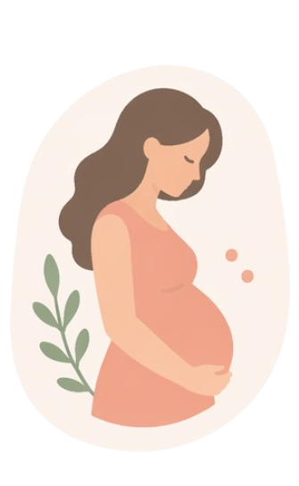
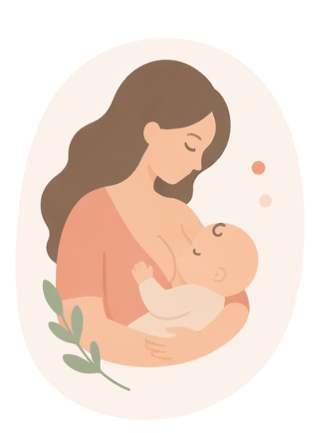
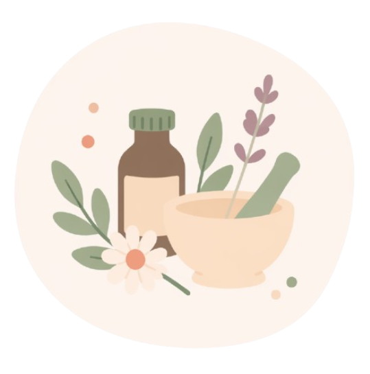
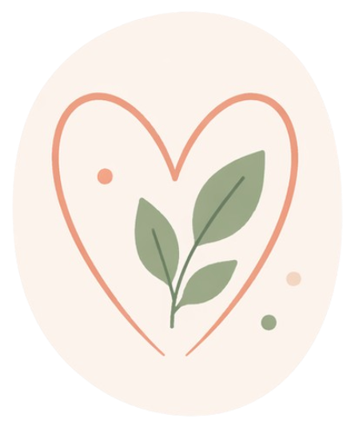
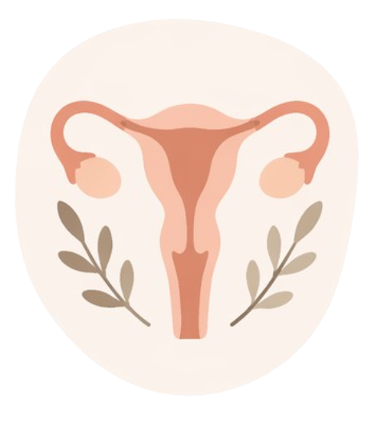
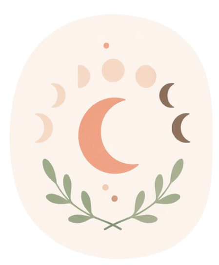

Alfred Musset a dit
« Je ne sais où va mon chemin mais je marche mieux quand ma main serre la tienne »
Laisse-moi être la doula qui te tient la main, on trouvera le chemin ensemble
Mes services
Accompagnement doula

Grossesse
1h
- Temps d’échange autour des thèmes que vous souhaitez de la périnatalité (Tout ce que vous souhaitez sans tabou !)
- Organisation Mois d’or et du post partum
- Accompagnement aux rendez-vous médicaux
- Temps d’échange avec le conjoint

Accouchement
- Présence à l’accouchement avec astreinte de deux semaines avant et d’une après la date du terme, une disponibilité 24h/24
- Soutien émotionnel
- Garante du respect de vos choix
- Veille à votre intimité et sérénité
- Technique de gestion de la douleur

Post-partum
1h
- Temps d’échange autour des thèmes que vous souhaitez du post-partum, de la parentalité, de l’allaitement
- Echange sur le thème de la diversification alimentaire
- Services à domicile pendant votre mois d’or, à voir ensemble
Naturopathie perinatale
Fertilité
1h - 1h30

Inconfort de grossesse
1h - 1h30

Vers l'alimentation vivante
1h - 1h30
Cycle féminin

Atelier Flux Libre Instinctif
1h - 1h30

Cycle régulier
1h - 1h30